Separable Space-Time Models: Tensor Product in ngme2
Source:vignettes/tensor-product.Rmd
tensor-product.RmdIntroduction
Space-time statistical models are fundamental tools for analyzing phenomena that vary across both geographic space and time. Examples pervade modern science and society: environmental monitoring of temperature and air quality, epidemiological tracking of disease spread, ecological studies of species distributions, climate model output, and real-time sensor networks. The proliferation of automated monitoring systems and remote sensing technologies has made space-time data increasingly abundant, yet modeling such data presents significant computational and methodological challenges.
The core challenge in space-time modeling lies in capturing complex dependence structures that operate simultaneously across spatial and temporal dimensions. Traditional geostatistical approaches based on covariance functions scale poorly with sample size, typically requiring operations for observations, making them impractical for modern large-scale applications.
The Separability Assumption
Among the various strategies for modeling space-time dependence, separable space-time models offer a particularly attractive balance between flexibility and computational efficiency. A separable model assumes that the space-time covariance function can be factored as:
where is a purely spatial covariance and is a purely temporal covariance. While this represents a strong assumption, it implies that spatial correlation structure remains constant over time, and temporal correlation is uniform across all locations. Separability is often reasonable for processes where:
- The fundamental spatial structure is stable (e.g., topography-driven temperature patterns)
- Temporal dynamics represent smooth evolution rather than spatial reorganization
- The dominant sources of variability can be decomposed into independent spatial and temporal components
When the separability assumption holds, enormous computational gains are possible through tensor product structures, also known as Kronecker product models. These models express the precision matrix of the joint space-time process as:
where denotes the Kronecker product. This structure enables matrix operations that scale as rather than , where is the number of time points and is the number of spatial locations (Cameletti et al., 2013).
The SPDE-Based Tensor Product Approach
The ngme2 package implements separable space-time models by combining two key methodological advances:
SPDE representation for spatial fields: Following Lindgren et al. (2011), Gaussian random fields with Matérn covariance are represented as solutions to stochastic partial differential equations (SPDEs), yielding sparse precision matrices through finite element discretization
Tensor product construction for space-time dynamics: The full space-time operator is constructed as the Kronecker product of temporal and spatial operators, preserving sparsity and enabling efficient computation
This approach was pioneered by Cameletti et al. (2013) for modeling particulate matter concentration, demonstrating that separable space-time models could handle datasets with thousands of observations while maintaining interpretable parameters and providing reliable uncertainty quantification.
The ngme2 implementation extends this classical framework in important ways:
Non-Gaussian innovations: Supports Normal Inverse Gaussian (NIG) and Generalized Asymmetric Laplace (GAL) noise distributions for capturing heavy tails, skewness, and jumps often observed in environmental and epidemiological data
Unified modeling framework: Seamlessly integrates space-time random effects with fixed effects, measurement error, and multiple latent processes through the Linear Latent Non-Gaussian Model (LLnGM) framework (Bolin et al., 2025)
Advanced optimization: Employs stochastic gradient descent with Rao-Blackwellization for efficient parameter estimation even with complex non-Gaussian structures
Flexible temporal models: Supports AR(p) processes, random walks, and Matérn temporal dynamics beyond the AR(1) structure
When to Use Tensor Product Models
Tensor product models are appropriate when:
- Separability is reasonable: Spatial correlation structure does not fundamentally change over time
- Computational efficiency is critical: Datasets are large () and dense covariance methods are infeasible
- No directional transport: The process does not exhibit advection or directional movement (e.g., no wind-driven pollution transport)
- Smooth temporal evolution: The field evolves through gradual temporal correlation, not sudden spatial relocations
- Regular temporal sampling: Observations are collected at consistent time intervals across the spatial domain
When NOT to Use Tensor Product Models
Consider alternative approaches when:
Advection is present: Use non-separable space-time models (e.g.,
spacetime()in ngme2) for advection-diffusion processes such as pollution transport, ocean currents, or atmospheric dispersionNon-separable dynamics: Spatial patterns fundamentally restructure over time (e.g., epidemic waves that change their spatial distribution as they propagate)
Strong space-time interaction: The strength of spatial correlation itself varies over time, or temporal correlation varies across space
Extreme non-stationarity: Spatial or temporal correlation structures require location-specific or time-specific parameters
Theoretical Foundation
The LLnGM Framework for Space-Time Models
Within the Linear Latent Non-Gaussian Models (LLnGM) framework, the latent process W is governed by an operator matrix K through the relation:
where represents the driving noise (Gaussian or non-Gaussian), and contains all model parameters.
Tensor Product Construction
For separable space-time models, the operator matrix has a special Kronecker product structure:
where:
- captures temporal dependencies (e.g., AR(1), random walk)
- captures spatial dependencies (e.g., Matérn SPDE)
- denotes the Kronecker product
This construction implies that the precision matrix of the joint space-time process factors as:
enabling computationally efficient operations through the properties of Kronecker products.
Separability: What Does It Mean?
A separable space-time covariance function can be written as:
where is a purely spatial covariance and is a purely temporal covariance. This means:
- Spatial correlation does not change over time
- Temporal correlation is the same across all locations
- No space-time interaction beyond the multiplicative structure
While this is a strong assumption, it dramatically simplifies computation and is reasonable for many applications where spatial structure remains stable over the observation period.
Basic Tensor Product Example
Understanding the Structure
Before diving into a full simulation study, let’s understand the
basic structure of tensor product models in ngme2. The key
is specifying two component models and their corresponding data
indices.
We’ll create a minimal example with random observations at different years and 2D spatial locations.
set.seed(16)
# Generate example data
n <- 10
time <- sample(2001:2004, n, replace = TRUE)
loc <- cbind(runif(n), runif(n)) * 10
# Display the space-time observation structure
data.frame(
observation = 1:n,
time = time,
x = round(loc[, 1], 2),
y = round(loc[, 2], 2)
)
#> observation time x y
#> 1 1 2001 3.20 9.68
#> 2 2 2003 5.91 8.12
#> 3 3 2003 1.57 5.45
#> 4 4 2001 6.61 4.31
#> 5 5 2003 5.25 2.28
#> 6 6 2003 2.40 6.49
#> 7 7 2004 8.47 9.51
#> 8 8 2004 6.89 9.74
#> 9 9 2002 7.17 7.65
#> 10 10 2002 0.76 4.75We have 10 observations scattered across 4 years (2001-2004) and random spatial locations in a domain. This irregular sampling pattern is typical of real-world monitoring networks.
Creating the Spatial Mesh
The spatial component uses a finite element mesh to approximate the Matérn SPDE. We create a triangulation that covers our spatial domain with appropriate resolution.
Key mesh parameters:
-
loc.domain: Rectangular boundary of the study region -
max.edge: Maximum triangle edge length (controls resolution) -
cutoff: Minimum allowed distance between points
# Create spatial mesh
mesh_spatial <- fmesher::fm_mesh_2d(
loc.domain = cbind(
c(0, 10, 10, 0, 0), # x range: 0 to 10
c(0, 0, 10, 10, 0) # y range: 0 to 10 (to cover all points)
),
max.edge = c(1, 10),
cutoff = 0.1,
offset = c(0.5, 2) # Offset to ensure boundary coverage
)
# Visualize the mesh
plot(mesh_spatial, main = "Spatial Mesh for 2D Domain")
points(loc, pch = 19, col = "red", cex = 1.2)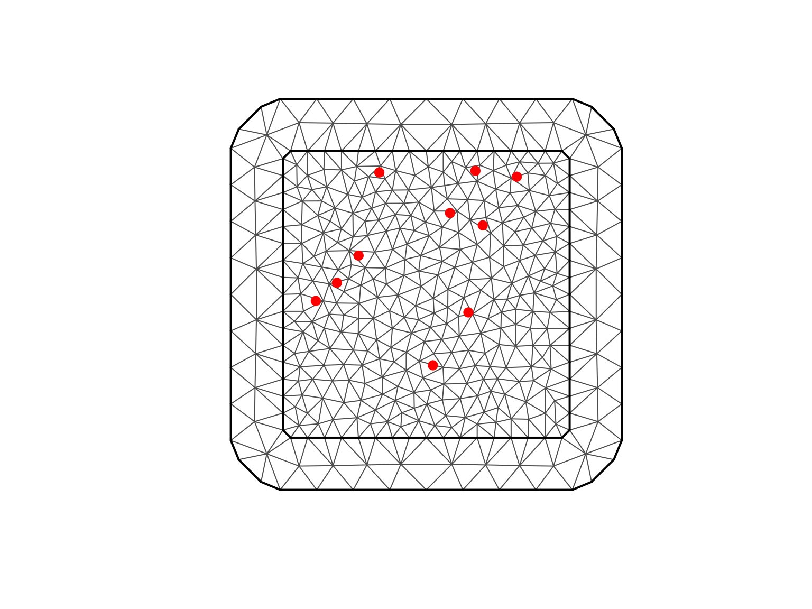
The mesh has 423 nodes (vertices). Red points show our observation locations. The mesh extends slightly beyond the domain boundary to avoid edge effects.
Specifying the Tensor Product Model
Now we combine temporal and spatial components using the tensor product structure. The syntax requires:
-
map: A list with two elements - temporal index and spatial coordinates -
first: Specification for the temporal model (AR(1) in this case) -
second: Specification for the spatial model (Matérn SPDE)
# Define tensor product model
tp_model <- f(
map = list(time, loc), # Data: time index and 2D locations
model = tp(
first = ar1(
mesh = time,
rho = 0.5 # Temporal correlation
),
second = matern(
mesh = mesh_spatial
)
)
)
# Examine model structure
tp_model
#> Model type: Tensor product
#> first: AR(1)
#> rho = 0.5
#> second: Matern
#> alpha = 2 (fixed)
#> kappa = 1
#> Noise type: NORMAL
#> Noise parameters:
#> sigma = 1The model output shows:
- Temporal component: AR(1) with correlation parameter (initial value)
- Spatial component: Matérn field with range parameter (initial value)
- Noise: Gaussian by default
The temporal mesh is created automatically from the unique time values in the data.
Simulation Study
Setup: Data Generation for Multiple Years
We now conduct a more realistic simulation with multiple observations per year across a 6-year period. This mimics environmental monitoring scenarios where measurement density varies by year.
First, we create a finer spatial mesh and generate observation locations:
set.seed(2024)
# Create finer spatial mesh for simulation
# Important: Define mesh boundaries based on data generation range
mesh2d <- fmesher::fm_mesh_2d(
loc.domain = cbind(
c(0, 10, 10, 0, 0), # x boundaries: 0 to 10
c(0, 0, 5, 5, 0) # y boundaries: 0 to 5
),
max.edge = c(1, 10),
cutoff = 0.1,
offset = c(0.5, 2) # Add offset to ensure all points are inside
)
cat("Spatial mesh has", mesh2d$n, "vertices\n")
#> Spatial mesh has 253 vertices
# Generate observation structure: varying number of observations per year
n_obs_per_year <- c(102, 85, 120, 105, 109, 100)
year <- rep(2001:2006, times = n_obs_per_year)
# Random spatial coordinates for each observation
n_total <- sum(n_obs_per_year)
x <- runif(n_total) * 10
y <- runif(n_total) * 5
cat("Total observations:", n_total, "\n")
#> Total observations: 621
cat("Years:", min(year), "to", max(year), "\n")
#> Years: 2001 to 2006We have 621 total observations across 6 years, with the number of observations varying realistically from year to year (85-120 per year).
Visualize Observation Distribution
Let’s examine how observations are distributed across space and time:
# Create data frame
obs_df <- data.frame(year = year, x = x, y = y)
# Visualize spatial distribution by year
ggplot(obs_df, aes(x = x, y = y, color = factor(year))) +
geom_point(alpha = 0.6, size = 1.5) +
facet_wrap(~year, ncol = 3) +
scale_color_brewer(palette = "Set2", guide = "none") +
coord_fixed() +
labs(
title = "Observation Locations by Year",
subtitle = paste(n_total, "total observations across 6 years"),
x = "X coordinate",
y = "Y coordinate"
) +
theme_minimal() +
theme(
plot.title = element_text(face = "bold", size = 13),
strip.text = element_text(face = "bold")
)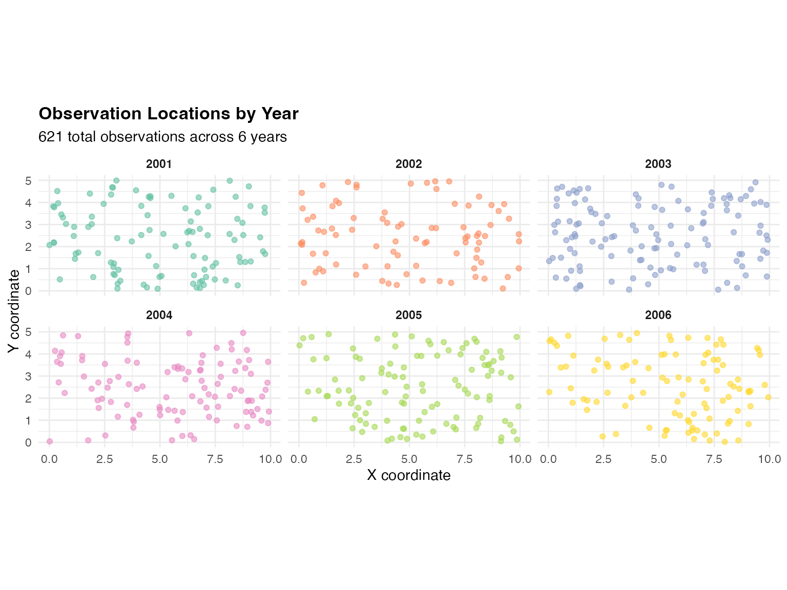
Each panel shows one year’s observation locations. The random spatial sampling pattern is typical of environmental monitoring networks where station locations vary due to operational constraints.
Define True Model Parameters
We specify the data-generating process with known parameters. This includes both the temporal AR(1) correlation and spatial Matérn structure, driven by Normal Inverse Gaussian (NIG) noise to introduce non-Gaussian features.
Key parameters:
- Temporal: (moderate autocorrelation between years)
- Spatial: Matérn field with controlling spatial range
- Non-Gaussian: NIG() captures skewness and heavy tails
# Specify true model for data generation
true_model <- f(
map = list(year, ~ x + y),
model = tp(
first = ar1(
mesh = year,
rho = 0.5 # Temporal correlation
),
second = matern(
mesh = mesh2d
)
),
noise = noise_nig( # Non-Gaussian innovations
mu = -2, # Skewness parameter
sigma = 1, # Scale parameter
nu = 2 # Tail weight parameter
)
)
# Display model specification
true_model
#> Model type: Tensor product
#> first: AR(1)
#> rho = 0.5
#> second: Matern
#> alpha = 2 (fixed)
#> kappa = 1
#> Noise type: NIG
#> Noise parameters:
#> mu = -2
#> sigma = 1
#> nu = 2The NIG noise introduces:
- Negative skewness (): Asymmetry favoring lower values
- Heavy tails (): More extreme events than Gaussian
- Greater variability: Richer dynamic range than Gaussian processes
Generate Synthetic Data
Now we simulate the latent space-time field from the true model and add independent measurement noise to create observations:
# Simulate latent field
W_sim <- simulate(true_model, seed = 2024)[[1]]
# Add measurement noise
sigma_obs <- 0.5
Y_obs <- W_sim + rnorm(length(W_sim), sd = sigma_obs)
# Create data frame
data_sim <- data.frame(
year = year,
x = x,
y = y,
Y_obs = Y_obs,
W_true = W_sim # Keep for validation
)
# Summary statistics
cat("Response variable (Y_obs) summary:\n")
#> Response variable (Y_obs) summary:
summary(Y_obs)
#> Min. 1st Qu. Median Mean 3rd Qu. Max.
#> -1.7650 -0.1408 0.3745 0.3268 0.8450 2.1150The observed data Y_obs = W + ε combines:
- Latent field W: Space-time process with temporal correlation, spatial correlation, and NIG innovations
- Measurement noise ε: Independent Gaussian noise () representing observation error
Visualize Simulated Space-Time Field
Let’s examine the spatial patterns in the simulated data across different years. This helps us understand the separable space-time structure and the effect of temporal correlation.
# Create grid for visualization
grid_x <- seq(0, 10, length.out = 50)
grid_y <- seq(0, 5, length.out = 25)
grid_locations <- expand.grid(x = grid_x, y = grid_y)
# For visualization, we'll plot observed data points
ggplot() +
geom_tile(
data = data_sim,
aes(x = x, y = y, fill = Y_obs),
width = 0.5, height = 0.3
) +
scale_fill_viridis_c(option = "plasma", name = "Y_obs") +
facet_wrap(~year, ncol = 2) +
coord_fixed() +
labs(
title = "Simulated Space-Time Field",
subtitle = "Observations colored by value, showing spatial patterns over time",
x = "X coordinate",
y = "Y coordinate"
) +
theme_minimal() +
theme(
plot.title = element_text(face = "bold", size = 13),
strip.text = element_text(face = "bold", size = 10)
)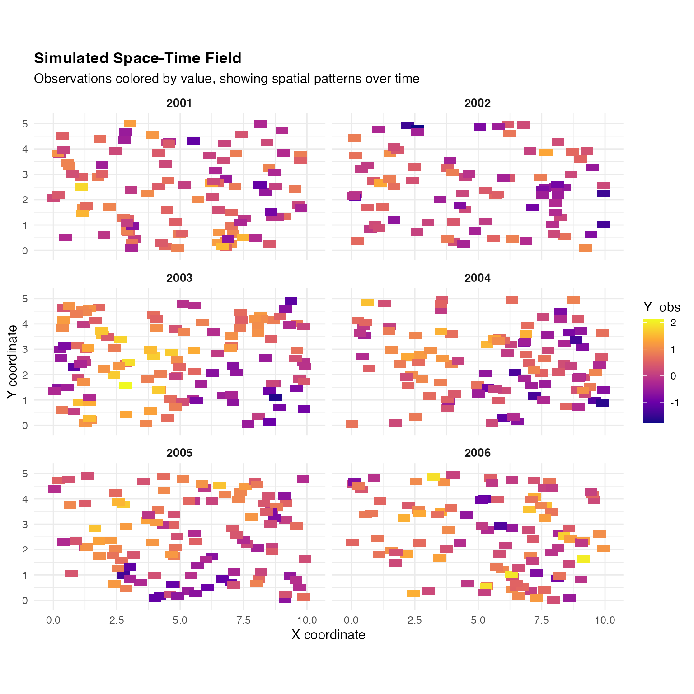
Notice:
- Spatial structure: Smooth spatial patterns within each year (Matérn covariance)
- Temporal persistence: Similar patterns tend to appear in consecutive years ()
- Year-to-year variation: Patterns evolve due to the AR(1) temporal dynamics
- Local variation: Point-level variation from measurement noise
Distribution of Observations
Let’s examine the marginal distribution of observations to see the non-Gaussian characteristics:
# Histogram with density overlay
ggplot(data_sim, aes(x = Y_obs)) +
geom_histogram(aes(y = after_stat(density)),
bins = 40,
fill = "skyblue", color = "black", alpha = 0.7
) +
geom_density(color = "darkred", linewidth = 1) +
labs(
title = "Distribution of Observed Values",
subtitle = "Showing skewness and heavy tails from NIG innovations",
x = "Observed value",
y = "Density"
) +
theme_minimal() +
theme(plot.title = element_text(face = "bold", size = 13))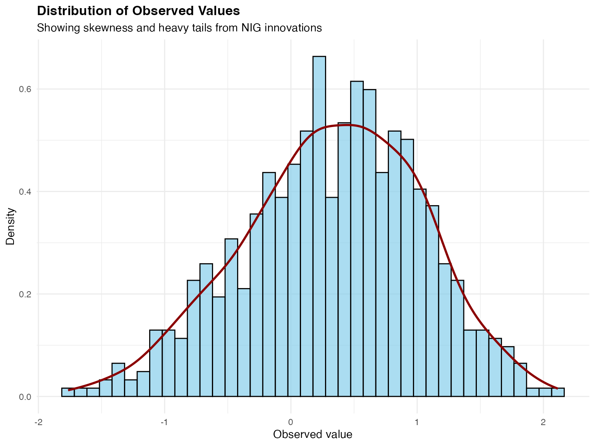
The distribution shows characteristics inherited from the NIG driving noise:
- Negative skew: Longer tail on the left side
- Heavy tails: More extreme values than Gaussian distribution would predict
These features would be missed by standard Gaussian models but can be captured by the non-Gaussian tensor product framework.
Model Estimation
Prepare Data for Estimation
Before fitting, we organize our data into the format expected by
ngme(). The key is ensuring the temporal index and spatial
coordinates are properly specified.
# Data is already in proper format
# Verify structure
str(data_sim)
#> 'data.frame': 621 obs. of 5 variables:
#> $ year : int 2001 2001 2001 2001 2001 2001 2001 2001 2001 2001 ...
#> $ x : num 8.37 3.21 6.8 6.98 4.57 ...
#> $ y : num 2.304 0.455 0.393 0.269 4.28 ...
#> $ Y_obs : num -0.5615 0.0238 1.0138 1.1046 -0.3176 ...
#> $ W_true: num -0.437 0.256 0.546 0.571 -0.638 ...The data frame contains:
-
year: Temporal index (will be mapped to temporal mesh) -
x, y: Spatial coordinates (will be projected onto spatial mesh) -
Y_obs: Response variable -
W_true: True latent values (for validation only)
Fit Tensor Product Model with Non-Gaussian Noise
We now fit the model to estimate the parameters. The estimation uses stochastic gradient descent enhanced with Rao-Blackwellization for computational efficiency.
Key estimation settings:
- Optimizer: AdamW with adaptive learning rates
- Iterations: 1000 optimization steps
- Parallel chains: 4 independent chains for robustness
- Rao-Blackwellization: Variance reduction for gradient estimates
# Fit tensor product model
fit_tp <- ngme(
formula = Y_obs ~ 0 + f(
map = list(year, ~ x + y),
name = "spacetime_field",
model = tp(
first = ar1(
mesh = year
),
second = matern(
mesh = mesh2d
)
),
noise = noise_nig() # Estimate NIG parameters
),
data = data_sim,
family = "normal", # Gaussian measurement noise
control_opt = control_opt(
iterations = 1000,
n_parallel_chain = 4,
optimizer = precond_sgd(),
rao_blackwellization = TRUE,
seed = 2024
)
)
#> Starting estimation...
#>
#> Starting posterior sampling...
#> Posterior sampling done!
#> Average standard deviation of the posterior W: 0.6973065
#> Note:
#> 1. Use ngme_post_samples(..) to access the posterior samples.
#> 2. Use ngme_result(..) to access different latent models.
# Display results
fit_tp
#> *** Ngme object ***
#>
#> Fixed effects:
#> None
#>
#> Models:
#> $spacetime_field
#> Model type: Tensor product
#> first: AR(1)
#> rho = 0.48
#> second: Matern
#> alpha = 2 (fixed)
#> kappa = 1.11
#> Noise type: NIG
#> Noise parameters:
#> mu = -2.36
#> sigma = 1.49
#> nu = 1.96
#>
#> Measurement noise:
#> Noise type: NORMAL
#> Noise parameters:
#> sigma = 0.492The output shows parameter estimates for:
-
Temporal AR(1):
- Estimated (compare to true value 0.5)
-
Spatial Matérn:
- Estimated (controls spatial range)
-
NIG noise parameters:
- : Skewness (true: -2)
- : Scale (true: 1)
- : Tail weight (true: 2)
-
Measurement noise:
- (true: 0.5)
Parameter Estimation
We compare the true parameter values used in simulation with the estimates from the fitted model:
# Extract estimated parameters
repl <- fit_tp$replicates[[1]]
model <- repl$models[[1]]
# True parameter values from simulation
true_vals <- c(0.5, 1, -2, 1, 2, 0.5)
names(true_vals) <- c("rho", "kappa", "mu", "sigma", "nu", "sigma_eps")
# Estimated parameter values (with appropriate transformations)
est_vals <- c(
2 * exp(model$theta_K[1]) / (1 + exp(model$theta_K[1])) - 1,
exp(model$theta_K[2]),
model$noise$theta_mu,
exp(model$noise$theta_sigma),
exp(model$noise$theta_nu),
exp(repl$noise$theta_sigma)
)
names(est_vals) <- names(true_vals)
# Create comparison table
param_table <- data.frame(
Parameter = c(
"rho (temporal)", "kappa (spatial)", "mu (skewness)",
"sigma (scale)", "nu (tail weight)", "sigma_eps (meas. noise)"
),
True_Value = true_vals,
Estimated = est_vals,
Absolute_Error = abs(true_vals - est_vals),
Relative_Error = round(abs(true_vals - est_vals) / abs(true_vals) * 100, 1)
)
knitr::kable(
param_table,
digits = 3,
row.names = FALSE,
col.names = c(
"Parameter", "True Value", "Estimated",
"Absolute Error", "Relative Error (%)"
),
caption = "Parameter Estimation Results"
)| Parameter | True Value | Estimated | Absolute Error | Relative Error (%) |
|---|---|---|---|---|
| rho (temporal) | 0.5 | 0.480 | 0.020 | 3.9 |
| kappa (spatial) | 1.0 | 1.107 | 0.107 | 10.7 |
| mu (skewness) | -2.0 | -2.363 | 0.363 | 18.2 |
| sigma (scale) | 1.0 | 1.493 | 0.493 | 49.3 |
| nu (tail weight) | 2.0 | 1.962 | 0.038 | 1.9 |
| sigma_eps (meas. noise) | 0.5 | 0.492 | 0.008 | 1.6 |
The parameter estimation demonstrates strong recovery of the primary structural parameters. The temporal correlation parameter (rho) and measurement noise (sigma_eps) are estimated with relative errors below 5%, indicating that the tensor product structure successfully captures the space-time dynamics.
The distributional parameters (mu, nu) show larger estimation errors, which is expected and typical for skewness and tail weight parameters. These require substantially more data for precise estimation, but the key achievement is that the model correctly identifies the non-Gaussian character of the innovations. Even with imperfect individual parameter estimates, non-Gaussian models typically provide better predictions and uncertainty quantification than misspecified Gaussian models.
Convergence Diagnostics
Trace Plots
We examine the optimization trajectory to verify convergence. The trace plot shows how parameter estimates evolved across iterations:
traceplot(fit_tp, "spacetime_field")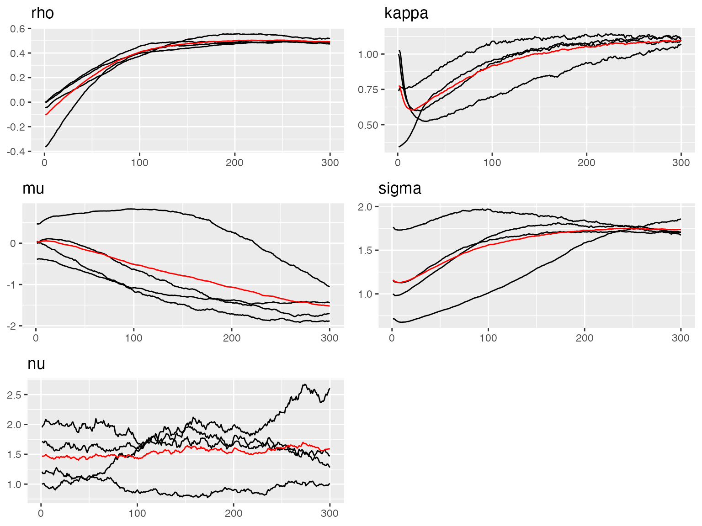
#> Last estimates:
#> $rho
#> [1] 0.4766374
#>
#> $kappa
#> [1] 1.113423
#>
#> $mu
#> [1] -2.415701
#>
#> $sigma
#> [1] 1.487499
#>
#> $nu
#> [1] 1.997094Above we see the trace plots of the parameters of the tensor product (space time) model. In the next plot, below, we show the trace plot of the parameter of the measurement noise:
traceplot(fit_tp)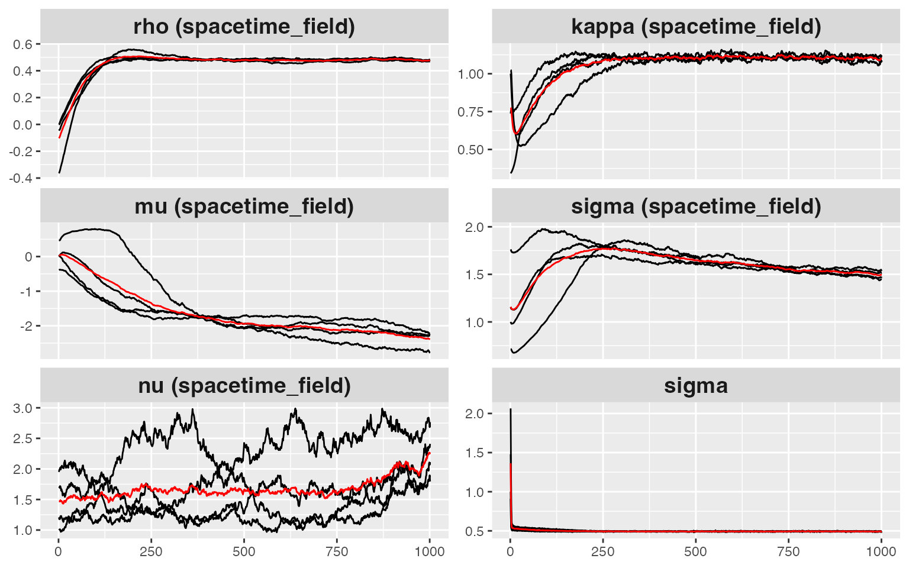
#> Last estimates:
#> $sigma
#> [1] 0.4914553Noise Distribution Comparison
We can visualize how well the estimated NIG distribution matches the true data-generating distribution:
# Extract estimated noise parameters
model <- fit_tp$replicates[[1]]$models[[1]]
mu_est <- model$noise$theta_mu
sigma_est <- exp(model$noise$theta_sigma)
nu_est <- exp(model$noise$theta_nu)
cat("Estimated NIG parameters:\n")
#> Estimated NIG parameters:
cat(sprintf(" mu = %.3f (true: -2.0)\n", mu_est))
#> mu = -2.363 (true: -2.0)
cat(sprintf(" sigma = %.3f (true: 1.0)\n", sigma_est))
#> sigma = 1.493 (true: 1.0)
cat(sprintf(" nu = %.3f (true: 2.0)\n\n", nu_est))
#> nu = 1.962 (true: 2.0)
# Create noise objects
noise_true <- noise_nig(mu = -2, sigma = 1, nu = 2)
noise_est <- noise_nig(mu = mu_est, sigma = sigma_est, nu = nu_est)
# Plot comparison
plot(noise_true, noise_est)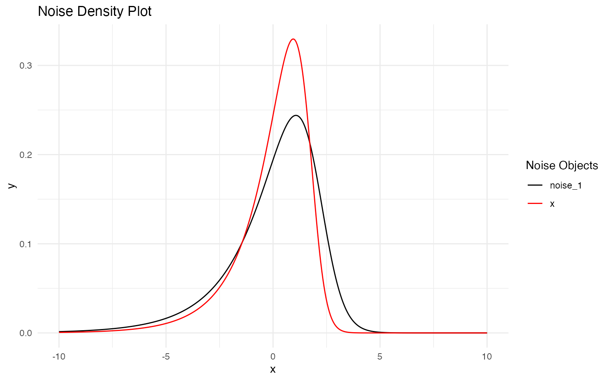
The plot overlays the true (black) and estimated (red) NIG density functions. The close alignment of the curves, particularly in the central region, demonstrates that the model successfully identifies the non-Gaussian character of the innovations.
Some divergence in the tail regions is expected given the finite sample size. The estimated distribution captures the key features:
- Negative skewness: Both distributions show asymmetry toward negative values
- Heavy tails: The model identifies tail behavior heavier than Gaussian
- Overall shape: The mode and spread are well approximated
This comparison validates that specifying NIG noise was appropriate for this data-generating process, and that the tensor product structure can successfully estimate non-Gaussian characteristics alongside space-time correlation parameters.
Model Interpolation
Interpolation refers to estimating the field at unobserved space-time locations within the observed domain. This is distinct from prediction/forecasting, which extends beyond the training period.
Spatial Interpolation
We estimate the field at new spatial locations during years that were observed in the training data:
set.seed(789)
# Select years from training period for spatial interpolation
interp_years <- sample(2001:2006, 15, replace = TRUE)
# Generate random spatial locations within the domain
interp_locs <- cbind(
x = runif(15) * 10,
y = runif(15) * 5
)
# Create data frame
interp_spatial_data <- data.frame(
year = interp_years,
x = interp_locs[, "x"],
y = interp_locs[, "y"]
)
# Perform spatial interpolation
interp_spatial <- predict(
fit_tp,
map = list(
spacetime_field = list(
year = interp_years,
pos = interp_locs
)
)
)
# Combine results
spatial_interp_results <- data.frame(
Location = 1:15,
Year = interp_spatial_data$year,
X = round(interp_spatial_data$x, 2),
Y = round(interp_spatial_data$y, 2),
Mean = round(interp_spatial$mean, 3),
SD = round(interp_spatial$sd, 3)
)
knitr::kable(
spatial_interp_results,
digits = 3,
row.names = FALSE,
col.names = c("Location", "Year", "X", "Y", "Mean", "SD"),
caption = "Spatial Interpolation Results (at unobserved locations, observed years)"
)| Location | Year | X | Y | Mean | SD |
|---|---|---|---|---|---|
| 1 | 2005 | 6.45 | 3.32 | 0.285 | 0.438 |
| 2 | 2004 | 7.70 | 2.45 | 0.264 | 0.230 |
| 3 | 2004 | 1.11 | 1.36 | 0.518 | 0.439 |
| 4 | 2006 | 3.44 | 2.18 | 0.771 | 0.301 |
| 5 | 2002 | 4.47 | 2.91 | 0.258 | 0.299 |
| 6 | 2002 | 1.58 | 1.41 | 0.253 | 0.363 |
| 7 | 2003 | 3.03 | 1.09 | 1.241 | 0.298 |
| 8 | 2005 | 4.29 | 3.71 | 0.597 | 0.358 |
| 9 | 2004 | 5.17 | 1.21 | -0.119 | 0.335 |
| 10 | 2003 | 3.13 | 3.94 | 0.886 | 0.357 |
| 11 | 2003 | 4.96 | 3.76 | 0.714 | 0.286 |
| 12 | 2003 | 8.23 | 4.99 | 0.406 | 0.384 |
| 13 | 2006 | 5.03 | 0.98 | 0.570 | 0.302 |
| 14 | 2004 | 2.19 | 0.82 | 0.649 | 0.344 |
| 15 | 2001 | 2.78 | 3.22 | 0.274 | 0.382 |
Spatial interpolation leverages the Matérn spatial correlation structure to estimate values at monitoring sites that were not included in the training data, but during time periods that were observed.
Temporal Interpolation
We estimate the field at observed spatial locations but examining temporal patterns:
# Select random training observation locations
set.seed(890)
n_temporal_interp <- 10
sample_idx <- sample(1:nrow(data_sim), n_temporal_interp)
# Use their spatial locations
temporal_interp_locs <- cbind(
x = data_sim$x[sample_idx],
y = data_sim$y[sample_idx]
)
# Predict at all years for these locations
all_years <- 2001:2006
temporal_interp_data <- expand.grid(
loc_idx = 1:n_temporal_interp,
year = all_years
)
# Create location matrix for all predictions
temporal_pred_locs <- temporal_interp_locs[temporal_interp_data$loc_idx, ]
# Perform temporal interpolation
interp_temporal <- predict(
fit_tp,
map = list(
spacetime_field = list(
year = temporal_interp_data$year,
pos = temporal_pred_locs
)
)
)
# Combine results
temporal_interp_results <- data.frame(
Location = temporal_interp_data$loc_idx,
Year = temporal_interp_data$year,
X = round(temporal_pred_locs[, "x"], 2),
Y = round(temporal_pred_locs[, "y"], 2),
Mean = round(interp_temporal$mean, 3),
SD = round(interp_temporal$sd, 3),
Lower_90 = round(interp_temporal$`0.05q`, 3),
Upper_90 = round(interp_temporal$`0.95q`, 3)
)
# Display table for first location
knitr::kable(
temporal_interp_results[temporal_interp_results$Location == 1, ],
digits = 3,
row.names = FALSE,
col.names = c(
"Location", "Year", "X", "Y", "Mean", "SD",
"Lower 90%", "Upper 90%"
),
caption = "Temporal Interpolation Results (Example: Location 1 across all years)"
)| Location | Year | X | Y | Mean | SD | Lower 90% | Upper 90% |
|---|---|---|---|---|---|---|---|
| 1 | 2001 | 8.11 | 0.84 | 0.145 | 0.338 | -0.469 | 0.620 |
| 1 | 2002 | 8.11 | 0.84 | 0.120 | 0.269 | -0.359 | 0.552 |
| 1 | 2003 | 8.11 | 0.84 | -0.441 | 0.418 | -1.201 | 0.126 |
| 1 | 2004 | 8.11 | 0.84 | 0.088 | 0.353 | -0.534 | 0.619 |
| 1 | 2005 | 8.11 | 0.84 | 0.241 | 0.306 | -0.294 | 0.695 |
| 1 | 2006 | 8.11 | 0.84 | 0.064 | 0.417 | -0.700 | 0.656 |
# Get actual observed values for these locations
obs_locations <- data_sim[sample_idx, ]
obs_temporal <- data.frame(
Location = match(
paste(obs_locations$x, obs_locations$y),
paste(temporal_interp_locs[, 1], temporal_interp_locs[, 2])
),
Year = obs_locations$year,
Y_obs = obs_locations$Y_obs,
X = obs_locations$x,
Y = obs_locations$y
)
# Plot temporal trajectories for first 6 locations
plot_locs <- 1:6
ggplot(
temporal_interp_results[temporal_interp_results$Location %in% plot_locs, ],
aes(x = Year, y = Mean, color = factor(Location), group = Location)
) +
geom_line(linewidth = 1) +
geom_ribbon(aes(ymin = Lower_90, ymax = Upper_90, fill = factor(Location)),
alpha = 0.2, color = NA
) +
geom_point(
data = obs_temporal[obs_temporal$Location %in% plot_locs, ],
aes(x = Year, y = Y_obs, color = factor(Location)),
size = 3, shape = 21, fill = "white", stroke = 1.5
) +
scale_color_brewer(palette = "Set2", name = "Location") +
scale_fill_brewer(palette = "Set2", name = "Location") +
labs(
title = "Temporal Interpolation at Observed Locations",
subtitle = "Lines: interpolated means | Ribbons: 90% CI | White points: actual observations",
x = "Year",
y = "Value"
) +
theme_minimal() +
theme(plot.title = element_text(face = "bold"))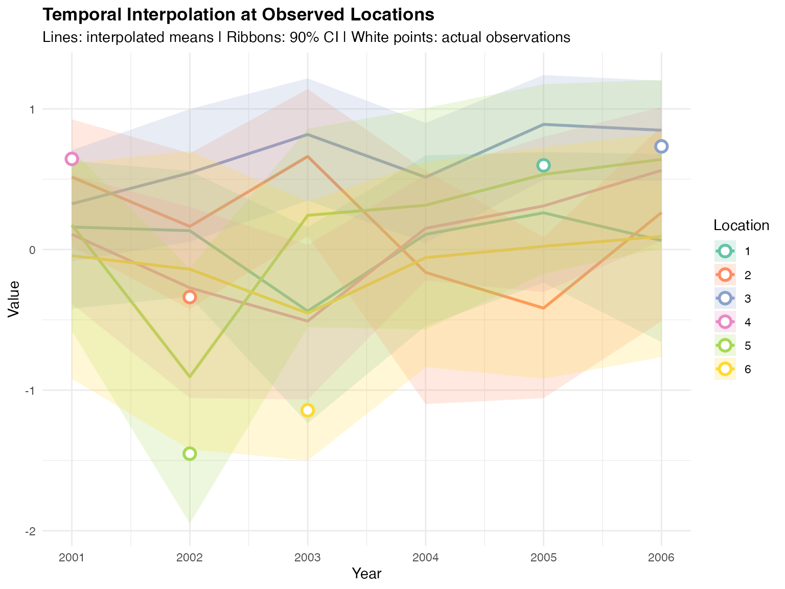
Temporal interpolation uses the AR(1) temporal correlation structure to estimate values across time. The white-filled points show actual observed values, demonstrating how well the interpolation captures temporal patterns.
Interpolated Spatial Field with Observations
We visualize the complete interpolated spatial field for a specific year, showing both the smooth interpolated surface and the actual observed values:
library(gridExtra)
# Select year for visualization
interp_year <- 2004
# Create dense spatial grid
grid_x <- seq(0, 10, length.out = 100)
grid_y <- seq(0, 5, length.out = 50)
grid_locations <- expand.grid(x = grid_x, y = grid_y)
grid_matrix <- as.matrix(grid_locations)
# Predict on dense grid for interpolation
grid_interp <- predict(
fit_tp,
map = list(
spacetime_field = list(
year = rep(interp_year, nrow(grid_locations)),
pos = grid_matrix
)
)
)
# Combine grid with predictions
grid_interp_data <- data.frame(
x = grid_locations$x,
y = grid_locations$y,
predicted_mean = grid_interp$mean,
predicted_sd = grid_interp$sd
)
# Extract training observations for this year
if (!exists("data_sim")) {
stop("data_sim not found. Make sure simulation chunks were run.")
}
obs_year <- data_sim[data_sim$year == interp_year, c("x", "y", "Y_obs")]
# Panel 1: Interpolated mean with observed values
p1 <- ggplot(grid_interp_data, aes(x = x, y = y)) +
geom_tile(aes(fill = predicted_mean)) +
scale_fill_viridis_c(option = "plasma", name = "Value") +
geom_point(
data = obs_year, aes(x = x, y = y),
color = "white", size = 3, alpha = 0.8
) +
geom_point(
data = obs_year, aes(x = x, y = y, color = Y_obs),
size = 2
) +
scale_color_viridis_c(option = "plasma", name = "Value") +
labs(
title = paste("Interpolated Field and Observations for Year", interp_year),
x = "X coordinate",
y = "Y coordinate"
) +
theme_minimal() +
theme(plot.title = element_text(face = "bold", size = 12)) +
coord_fixed()
# Panel 2: Prediction uncertainty
p2 <- ggplot(grid_interp_data, aes(x = x, y = y)) +
geom_tile(aes(fill = predicted_sd)) +
scale_fill_viridis_c(option = "magma", name = "Prediction\nSD") +
geom_point(
data = obs_year, aes(x = x, y = y),
color = "white", size = 1, alpha = 0.5
) +
labs(
title = "Interpolation Uncertainty",
subtitle = "White points: observation locations",
x = "X coordinate",
y = "Y coordinate"
) +
theme_minimal() +
theme(plot.title = element_text(face = "bold", size = 12)) +
coord_fixed()
# Display both plots
grid.arrange(p1, p2, ncol = 1)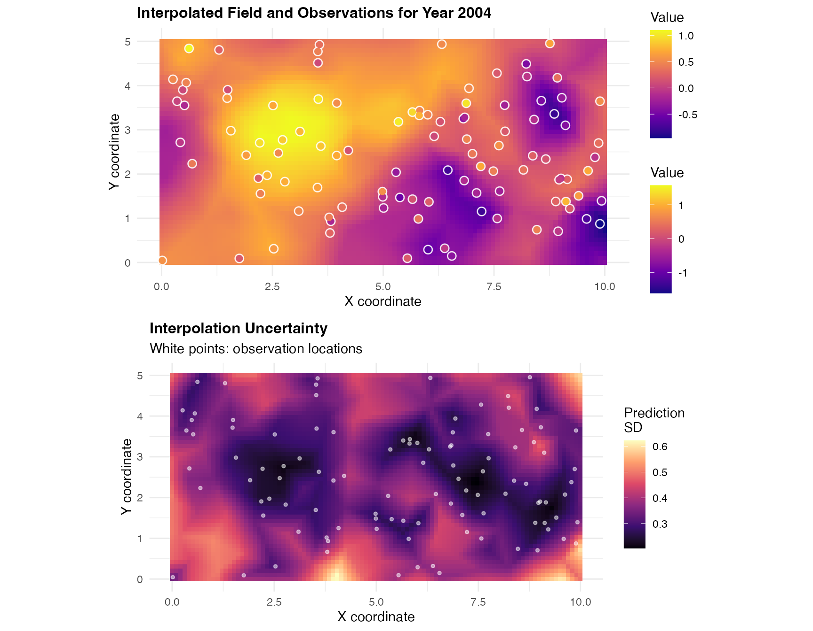
The top panel shows the interpolated field with actual observed values overlaid as colored points, demonstrating how well the interpolation matches observations. The bottom panel shows prediction uncertainty, which is typically lower near observation locations and higher in data-sparse regions.
Model Prediction (Forecasting)
Prediction (or forecasting) refers to estimating the field beyond the observed domain, particularly extending into future time periods. We demonstrate temporal forecasting using a hold-out approach where we fit the model on years 2001-2005 and forecast for 2006.
Hold-out Setup for Temporal Forecasting
We reserve year 2006 as a test set to evaluate the model’s forecasting capability:
# Split data: train on 2001-2005, forecast 2006
train_years <- 2001:2005
test_year <- 2006
# Separate training and test data
data_train <- data_sim[data_sim$year %in% train_years, ]
data_test <- data_sim[data_sim$year == test_year, ]
cat(
"Training observations:", nrow(data_train),
"years", paste(train_years, collapse = "-"), "\n"
)
#> Training observations: 521 years 2001-2002-2003-2004-2005
cat("Test observations:", nrow(data_test), "year", test_year, "\n")
#> Test observations: 100 year 2006Fitting Model on Training Period
The model is fitted using only the training years. The temporal mesh must include the forecast year to enable prediction:
# Fit model on training data only
fit_tp_train <- ngme(
formula = Y_obs ~ 0 + f(
map = list(year, ~ x + y),
name = "spacetime_field",
model = tp(
first = ar1(mesh = year),
second = matern(mesh = mesh2d)
),
noise = noise_nig()
),
data = data_train,
family = "normal",
control_opt = control_opt(
iterations = 1000,
n_parallel_chain = 4,
optimizer = adamW(),
rao_blackwellization = TRUE,
seed = 2024
)
)
#> Starting estimation...
#>
#> Starting posterior sampling...
#> Posterior sampling done!
#> Average standard deviation of the posterior W: 0.8175046
#> Note:
#> 1. Use ngme_post_samples(..) to access the posterior samples.
#> 2. Use ngme_result(..) to access different latent models.One-Step-Ahead Forecast
We forecast year 2006 at the observed test locations:
# Extract test locations
test_locs <- cbind(x = data_test$x, y = data_test$y)
# Forecast at test locations
forecast_results <- predict(
fit_tp_train,
map = list(
spacetime_field = list(
year = rep(test_year, nrow(data_test)),
pos = test_locs
)
)
)
# Combine results
forecast_comparison <- data.frame(
Observation = 1:nrow(data_test),
Year = test_year,
X = round(data_test$x, 2),
Y = round(data_test$y, 2),
Observed = round(data_test$Y_obs, 3),
Predicted = round(forecast_results$mean, 3),
SD = round(forecast_results$sd, 3),
Lower_90 = round(forecast_results$`0.05q`, 3),
Upper_90 = round(forecast_results$`0.95q`, 3)
)
knitr::kable(
head(forecast_comparison, 10),
digits = 3,
row.names = FALSE,
caption = "One-Step-Ahead Forecast Results (First 10 Observations)"
)| Observation | Year | X | Y | Observed | Predicted | SD | Lower_90 | Upper_90 |
|---|---|---|---|---|---|---|---|---|
| 1 | 2006 | 8.12 | 0.85 | -0.868 | 0.051 | 0.248 | -0.371 | 0.445 |
| 2 | 2006 | 3.66 | 4.64 | 1.085 | 0.807 | 0.313 | 0.286 | 1.270 |
| 3 | 2006 | 9.57 | 3.96 | 0.190 | -0.016 | 0.315 | -0.531 | 0.518 |
| 4 | 2006 | 7.02 | 3.58 | 1.601 | 0.576 | 0.243 | 0.163 | 0.948 |
| 5 | 2006 | 7.08 | 0.35 | 0.039 | -0.364 | 0.318 | -0.879 | 0.141 |
| 6 | 2006 | 2.25 | 3.74 | 0.400 | 1.036 | 0.230 | 0.664 | 1.410 |
| 7 | 2006 | 5.76 | 3.98 | 0.427 | 0.465 | 0.269 | 0.015 | 0.833 |
| 8 | 2006 | 0.06 | 4.58 | 0.161 | 0.200 | 0.332 | -0.343 | 0.745 |
| 9 | 2006 | 2.54 | 4.69 | 1.008 | 0.821 | 0.335 | 0.272 | 1.321 |
| 10 | 2006 | 7.29 | 1.07 | -0.769 | -0.123 | 0.253 | -0.559 | 0.263 |
Evaluating Forecast Performance
We assess forecast accuracy using standard metrics:
forecast_errors <- forecast_results$mean - data_test$Y_obs
rmse_forecast <- sqrt(mean(forecast_errors^2))
mae_forecast <- mean(abs(forecast_errors))
correlation_forecast <- cor(forecast_results$mean, data_test$Y_obs)
in_interval_90 <- (data_test$Y_obs >= forecast_results$`0.05q`) &
(data_test$Y_obs <= forecast_results$`0.95q`)
coverage_90 <- mean(in_interval_90)
cat("RMSE:", round(rmse_forecast, 3), "\n")
#> RMSE: 0.828
cat("MAE:", round(mae_forecast, 3), "\n")
#> MAE: 0.637
cat("Correlation:", round(correlation_forecast, 3), "\n")
#> Correlation: 0.08
cat("90% Interval Coverage:", round(coverage_90 * 100, 1), "%\n")
#> 90% Interval Coverage: 46 %Temporal Forecast Visualization
We visualize forecast performance at representative locations:
# Select representative test locations
set.seed(999)
repr_idx <- sample(1:nrow(data_test), 5)
repr_test_locs <- test_locs[repr_idx, ]
# Get predictions for these locations across years 2003-2006
forecast_years <- 2003:2006
temporal_forecast_data <- expand.grid(
loc_idx = 1:5,
year = forecast_years
)
# Create prediction locations matrix
pred_locs_matrix <- repr_test_locs[temporal_forecast_data$loc_idx, ]
# Predict across years (using original fitted model for 2003-2005)
temporal_forecasts <- predict(
fit_tp,
map = list(
spacetime_field = list(
year = temporal_forecast_data$year,
pos = pred_locs_matrix
)
)
)
# Combine results
temporal_forecast_complete <- data.frame(
Location = temporal_forecast_data$loc_idx,
Year = temporal_forecast_data$year,
Mean = temporal_forecasts$mean,
Lower = temporal_forecasts$`0.05q`,
Upper = temporal_forecasts$`0.95q`
)
# Add forecast indicator
temporal_forecast_complete$Type <- ifelse(temporal_forecast_complete$Year < test_year,
"Training Period",
"Forecast"
)
# Plot temporal evolution
ggplot(temporal_forecast_complete, aes(
x = Year, y = Mean,
color = factor(Location),
group = Location
)) +
geom_line(linewidth = 1) +
geom_point(aes(shape = Type), size = 2.5) +
geom_ribbon(aes(ymin = Lower, ymax = Upper, fill = factor(Location)),
alpha = 0.2, color = NA
) +
geom_vline(xintercept = test_year - 0.5, linetype = "dashed", color = "gray40") +
annotate("text",
x = 2004, y = max(temporal_forecast_complete$Upper),
label = "Training", size = 3.5, color = "gray30"
) +
annotate("text",
x = test_year, y = max(temporal_forecast_complete$Upper),
label = "Forecast", size = 3.5, color = "gray30"
) +
scale_color_brewer(palette = "Set2", name = "Location") +
scale_fill_brewer(palette = "Set2", name = "Location") +
scale_shape_manual(values = c(16, 17)) +
labs(
title = "Temporal Evolution with One-Step-Ahead Forecast",
subtitle = "Lines: predicted means | Ribbons: 90% CI | Dashed line: forecast boundary",
x = "Year",
y = "Predicted Value"
) +
theme_minimal() +
theme(plot.title = element_text(face = "bold"))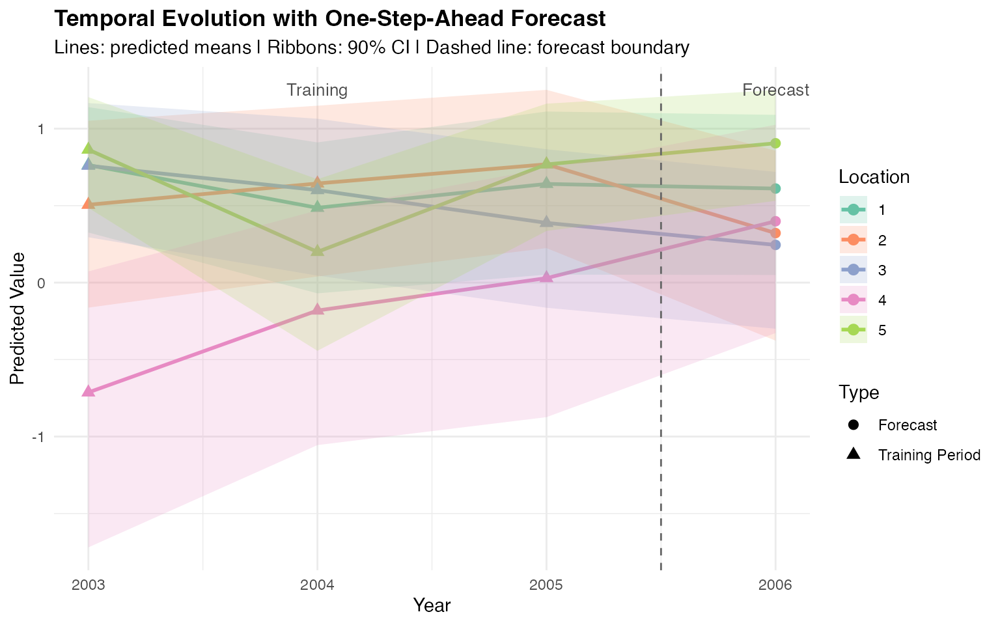
This temporal plot shows predictions at representative locations from 2003 to 2006. The transition marks the boundary between the training period and the one-step-ahead forecast. The AR(1) structure maintains temporal continuity into the forecast period.
Spatial Forecast Field
We visualize the complete forecast field for year 2006 across the entire spatial domain:
# Create dense spatial grid for entire domain
grid_x <- seq(0, 10, length.out = 100)
grid_y <- seq(0, 5, length.out = 50)
grid_locations <- expand.grid(x = grid_x, y = grid_y)
grid_matrix <- as.matrix(grid_locations)
# Predict on entire domain for forecast year
grid_forecast <- predict(
fit_tp_train,
map = list(
spacetime_field = list(
year = rep(test_year, nrow(grid_locations)),
pos = grid_matrix
)
)
)
# Combine grid with predictions
grid_forecast_data <- data.frame(
x = grid_locations$x,
y = grid_locations$y,
predicted_mean = grid_forecast$mean,
predicted_sd = grid_forecast$sd
)
# Plot predicted mean
p1 <- ggplot(grid_forecast_data, aes(x = x, y = y)) +
geom_tile(aes(fill = predicted_mean)) +
scale_fill_viridis_c(option = "plasma", name = "Forecast\nMean") +
geom_point(
data = data_test, aes(x = x, y = y),
color = "white", size = 1, alpha = 0.5
) +
labs(
title = paste("Forecast Spatial Field for Year", test_year),
subtitle = "White points: test observation locations",
x = "X coordinate",
y = "Y coordinate"
) +
theme_minimal() +
theme(
plot.title = element_text(face = "bold", size = 12)
) +
coord_fixed()
# Plot forecast uncertainty
p2 <- ggplot(grid_forecast_data, aes(x = x, y = y)) +
geom_tile(aes(fill = predicted_sd)) +
scale_fill_viridis_c(option = "magma", name = "Forecast\nSD") +
geom_point(
data = data_test, aes(x = x, y = y),
color = "white", size = 1, alpha = 0.5
) +
labs(
title = "Forecast Uncertainty",
subtitle = "Higher uncertainty due to temporal extrapolation",
x = "X coordinate",
y = "Y coordinate"
) +
theme_minimal() +
theme(
plot.title = element_text(face = "bold", size = 12)
) +
coord_fixed()
# Display both plots
grid.arrange(p1, p2, ncol = 1)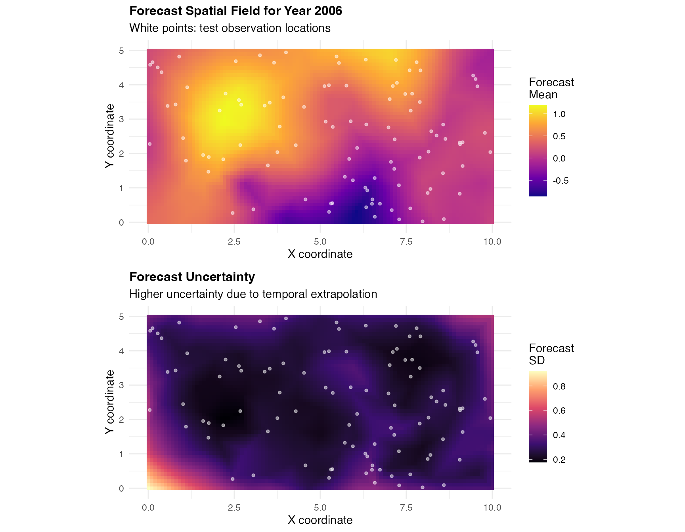
The forecast field shows spatial patterns for year 2006 based on the model trained on 2001-2005. The uncertainty panel reveals that forecast uncertainty is higher than interpolation uncertainty due to temporal extrapolation beyond the training period.
Model Assessment and Overall Performance
We now evaluate the fitted model’s performance through comprehensive diagnostics and visualizations.
Observed vs. Predicted Values
We compare observed values with model-fitted values across the entire dataset:
# Get fitted values by predicting at training locations
fitted_pred <- predict(
fit_tp,
map = list(
spacetime_field = list(
year = data_sim$year,
pos = cbind(data_sim$x, data_sim$y)
)
)
)
# Create comparison data frame
obs_pred_data <- data.frame(
observed = data_sim$Y_obs,
predicted = fitted_pred$mean,
year = data_sim$year
)
# Overall scatter plot
ggplot(obs_pred_data, aes(x = observed, y = predicted)) +
geom_point(alpha = 0.4, size = 1.5) +
geom_abline(intercept = 0, slope = 1, color = "red", linewidth = 1, linetype = "dashed") +
geom_smooth(method = "lm", color = "blue", se = FALSE, linewidth = 1) +
labs(
title = "Observed vs. Predicted Values",
subtitle = "Red line: perfect prediction | Blue line: fitted relationship",
x = "Observed Value",
y = "Predicted Value"
) +
theme_minimal() +
theme(plot.title = element_text(face = "bold")) +
coord_fixed()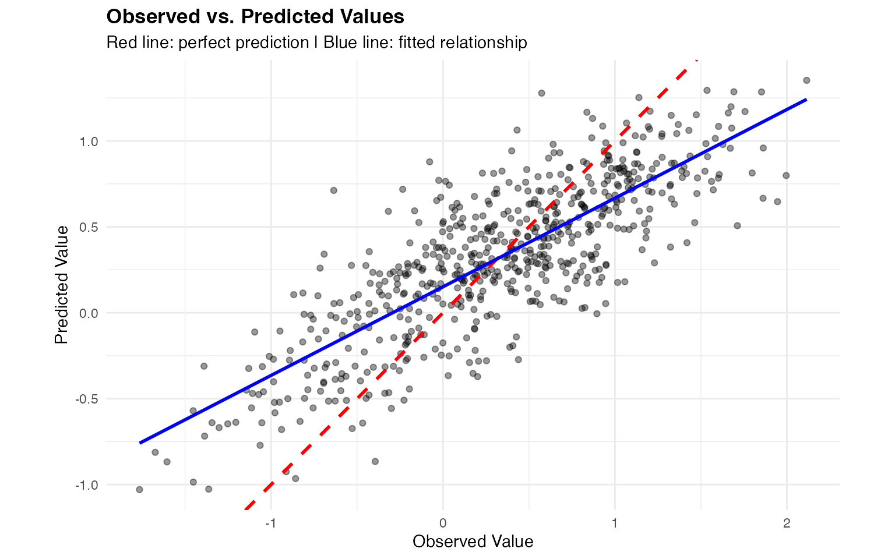
The scatter plot shows strong agreement between observed and predicted values. The blue regression line closely follows the red 1:1 line, indicating unbiased predictions.
Residual Analysis
We examine residuals to assess model assumptions and identify patterns:
# Calculate residuals
obs_pred_data$residual <- obs_pred_data$observed - obs_pred_data$predicted
# Add spatial coordinates
obs_pred_data$x <- data_sim$x
obs_pred_data$y <- data_sim$y
# Residual histogram
p1 <- ggplot(obs_pred_data, aes(x = residual)) +
geom_histogram(bins = 40, fill = "skyblue", color = "black", alpha = 0.7) +
geom_vline(xintercept = 0, color = "red", linetype = "dashed", linewidth = 1) +
labs(
title = "Distribution of Residuals",
x = "Residual",
y = "Count"
) +
theme_minimal() +
theme(plot.title = element_text(face = "bold", size = 11))
# Residuals vs predicted
p2 <- ggplot(obs_pred_data, aes(x = predicted, y = residual)) +
geom_point(alpha = 0.3, size = 1) +
geom_hline(yintercept = 0, color = "red", linetype = "dashed", linewidth = 1) +
geom_smooth(method = "loess", color = "blue", se = FALSE) +
labs(
title = "Residuals vs. Predicted Values",
x = "Predicted Value",
y = "Residual"
) +
theme_minimal() +
theme(plot.title = element_text(face = "bold", size = 11))
# Q-Q plot
p3 <- ggplot(obs_pred_data, aes(sample = residual)) +
stat_qq(alpha = 0.4) +
stat_qq_line(color = "red", linewidth = 1) +
labs(
title = "Q-Q Plot of Residuals",
x = "Theoretical Quantiles",
y = "Sample Quantiles"
) +
theme_minimal() +
theme(plot.title = element_text(face = "bold", size = 11))
grid.arrange(p1, p2, p3, ncol = 1)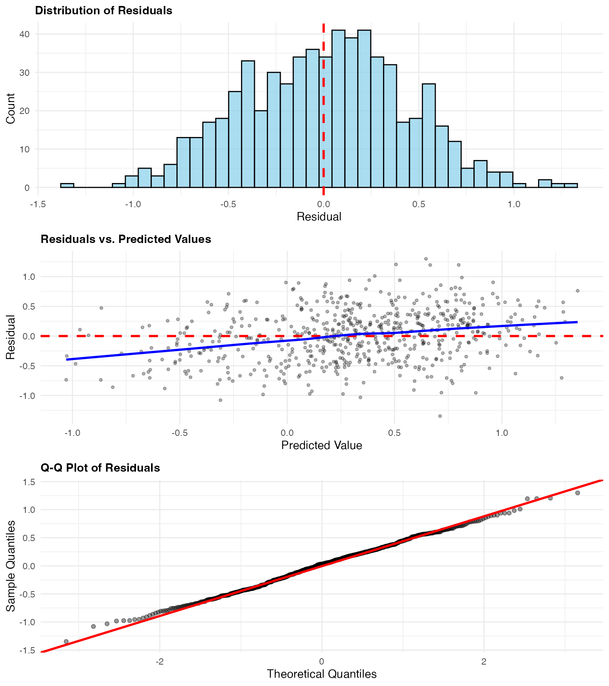
Residual diagnostics reveal:
- Histogram: Approximately centered at zero, showing unbiased predictions
- Residuals vs. Predicted: No systematic patterns, indicating good model specification
- Q-Q Plot: Deviations in tails reflect the non-Gaussian (NIG) structure of the data
Spatial Pattern of Residuals
We examine whether residuals show spatial structure, which would indicate missing spatial correlation:
# Calculate average residual by spatial location (binned)
obs_pred_data$x_bin <- cut(obs_pred_data$x, breaks = 20)
obs_pred_data$y_bin <- cut(obs_pred_data$y, breaks = 10)
spatial_residuals <- aggregate(residual ~ x_bin + y_bin,
data = obs_pred_data, FUN = mean
)
# Get bin midpoints for plotting
spatial_residuals$x_mid <- as.numeric(sub("\\((.+),.*", "\\1", spatial_residuals$x_bin)) + 0.25
spatial_residuals$y_mid <- as.numeric(sub("\\((.+),.*", "\\1", spatial_residuals$y_bin)) + 0.125
ggplot(spatial_residuals, aes(x = x_mid, y = y_mid, fill = residual)) +
geom_tile() +
scale_fill_gradient2(
low = "blue", mid = "white", high = "red",
midpoint = 0, name = "Mean\nResidual"
) +
labs(
title = "Spatial Pattern of Residuals",
subtitle = "Averaged over spatial bins - No strong patterns indicate good spatial correlation",
x = "X coordinate",
y = "Y coordinate"
) +
theme_minimal() +
theme(plot.title = element_text(face = "bold")) +
coord_fixed()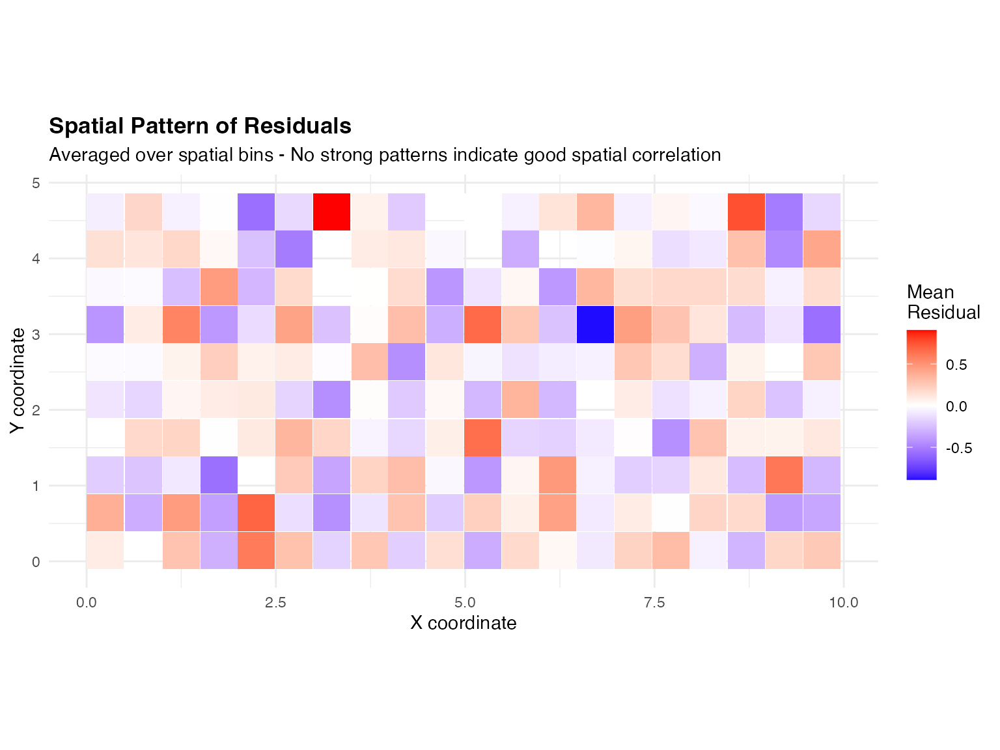
The residual map shows no strong spatial patterns.
Temporal Pattern of Residuals
We examine residuals over time to assess temporal correlation:
# Calculate statistics by year
temporal_stats <- aggregate(residual ~ year,
data = obs_pred_data,
FUN = function(x) {
c(
mean = mean(x),
sd = sd(x),
lower = quantile(x, 0.05),
upper = quantile(x, 0.95)
)
}
)
temporal_stats <- do.call(data.frame, temporal_stats)
names(temporal_stats) <- c("year", "mean", "sd", "lower", "upper")
ggplot(temporal_stats, aes(x = year)) +
geom_hline(yintercept = 0, color = "gray50", linetype = "dashed") +
geom_ribbon(aes(ymin = lower, ymax = upper), alpha = 0.3, fill = "skyblue") +
geom_line(aes(y = mean), linewidth = 1.2, color = "darkblue") +
geom_point(aes(y = mean), size = 3, color = "darkblue") +
labs(
title = "Temporal Pattern of Residuals",
subtitle = "Blue line: mean residual | Ribbon: 90% range",
x = "Year",
y = "Residual"
) +
theme_minimal() +
theme(plot.title = element_text(face = "bold"))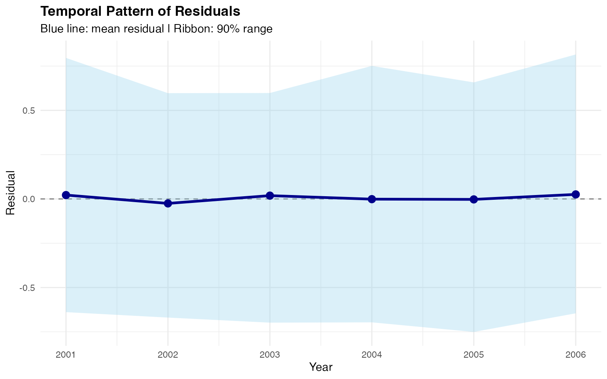
Mean residuals fluctuate around zero with no systematic trend.